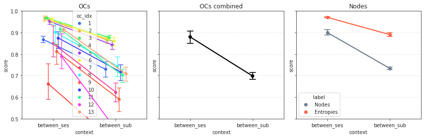

Sep ??st, 2021¶
Motivation: fig 2
# HIDE CODE
import os
import sys
import nibabel as nib
import networkx as nx
from time import time
from pprint import pprint
from copy import deepcopy as dc
from os.path import join as pjoin
from myterial import orange, blue_grey
from IPython.display import display, IFrame, HTML
from matplotlib.colors import rgb2hex, to_rgb
import matplotlib.pyplot as plt
import seaborn as sns
# set style & no interpolalation
import matplotlib
matplotlib.rcParams['image.interpolation'] = 'none'
sns.set_style('whitegrid')
# tmp & extras dir
git_dir = pjoin(os.environ['HOME'], 'Dropbox/git')
tmp_dir = pjoin(git_dir, 'jb-Ca-fMRI/tmp')
extras_dir = pjoin(git_dir, 'jb-Ca-fMRI/_extras')
lfr_dir = pjoin(os.environ['HOME'], 'Documents/workspaces/lfr/binary_overlapping')
# GitHub
sys.path.insert(0, pjoin(git_dir, '_Ca-fMRI'))
from register.atlas import load_allen, make_tree_graph
from register.parcellation import Parcellation
from analysis.hierarchical import Hierarchical
from analysis.bootstrap import *
from analysis.svinet import *
from analysis.group import *
from analysis.lfr import *
from utils.render import *
from utils.plotting import *
from model.mouse import Mice
from model.configuration import Config
# warnings
import warnings
warnings.filterwarnings('ignore', category=DeprecationWarning)
Mice¶
svinet_props = {
'task': 'rest',
'mode': 'bold',
'metric': 'pearson',
'match_metric': 'euclidean',
'graph_type': 'real',
}
mice = Mice(Config(128))
mice.combine_dfs(svinet_props.get('task', 'rest'), full=True)
k = 13
p = 20
svinet = SVINET(mice, k, p, 'sub-SLC')
group_dir = get_svinet_group_dir(
results_dir=mice.cfg.results_dir,
k=k,
p=p,
graph_type=svinet_props.get('graph_type', 'real'),
)
print(group_dir)
current expt: 'p20'
/home/hadi/Documents/Ca-fMRI/processed/norm-global_parcel-spatial-sym_n-128/results/SVINET/gr oup_results/real-p20-k13
Load group results¶
available = [
e for e in os.listdir(group_dir)
if '(0.2,1.0;4)' in e
]
file = sorted(available, key=sort_date_latest)[-1]
group = np.load(pjoin(group_dir, file), allow_pickle=True).item()
print(file)
group_bins(0.2,1.0;4)_(2021_09_14).npy
for k in range(3, 18):
group, svinets, group_dir = group_results_svinet(
mice=mice,
k=k,
p=p,
num_cuts=4,
bin_edges=(0.2, 1.),
global_order=False,
dist_metric='cosine',
**svinet_props,
)
[PROGRESS] 'group_bins(0.2,1.0;4)_(2021_09_15).npy' saved at /home/hadi/Documents/Ca-fMRI/processed/norm-global_parcel-spatial-sym_n-128/results/SVINET/gr oup_results/real-p20-k3
[PROGRESS] 'group_bins(0.2,1.0;4)_(2021_09_15).npy' saved at /home/hadi/Documents/Ca-fMRI/processed/norm-global_parcel-spatial-sym_n-128/results/SVINET/gr oup_results/real-p20-k4
[PROGRESS] 'group_bins(0.2,1.0;4)_(2021_09_15).npy' saved at /home/hadi/Documents/Ca-fMRI/processed/norm-global_parcel-spatial-sym_n-128/results/SVINET/gr oup_results/real-p20-k5
[PROGRESS] 'group_bins(0.2,1.0;4)_(2021_09_15).npy' saved at /home/hadi/Documents/Ca-fMRI/processed/norm-global_parcel-spatial-sym_n-128/results/SVINET/gr oup_results/real-p20-k6
[PROGRESS] 'group_bins(0.2,1.0;4)_(2021_09_15).npy' saved at /home/hadi/Documents/Ca-fMRI/processed/norm-global_parcel-spatial-sym_n-128/results/SVINET/gr oup_results/real-p20-k7
[PROGRESS] 'group_bins(0.2,1.0;4)_(2021_09_15).npy' saved at /home/hadi/Documents/Ca-fMRI/processed/norm-global_parcel-spatial-sym_n-128/results/SVINET/gr oup_results/real-p20-k8
[PROGRESS] 'group_bins(0.2,1.0;4)_(2021_09_15).npy' saved at /home/hadi/Documents/Ca-fMRI/processed/norm-global_parcel-spatial-sym_n-128/results/SVINET/gr oup_results/real-p20-k9
[PROGRESS] 'group_bins(0.2,1.0;4)_(2021_09_15).npy' saved at /home/hadi/Documents/Ca-fMRI/processed/norm-global_parcel-spatial-sym_n-128/results/SVINET/gr oup_results/real-p20-k10
[PROGRESS] 'group_bins(0.2,1.0;4)_(2021_09_15).npy' saved at /home/hadi/Documents/Ca-fMRI/processed/norm-global_parcel-spatial-sym_n-128/results/SVINET/gr oup_results/real-p20-k11
[PROGRESS] 'group_bins(0.2,1.0;4)_(2021_09_15).npy' saved at /home/hadi/Documents/Ca-fMRI/processed/norm-global_parcel-spatial-sym_n-128/results/SVINET/gr oup_results/real-p20-k12
[PROGRESS] 'group_bins(0.2,1.0;4)_(2021_09_15).npy' saved at /home/hadi/Documents/Ca-fMRI/processed/norm-global_parcel-spatial-sym_n-128/results/SVINET/gr oup_results/real-p20-k13
[PROGRESS] 'group_bins(0.2,1.0;4)_(2021_09_15).npy' saved at /home/hadi/Documents/Ca-fMRI/processed/norm-global_parcel-spatial-sym_n-128/results/SVINET/gr oup_results/real-p20-k14
[PROGRESS] 'group_bins(0.2,1.0;4)_(2021_09_15).npy' saved at /home/hadi/Documents/Ca-fMRI/processed/norm-global_parcel-spatial-sym_n-128/results/SVINET/gr oup_results/real-p20-k15
[PROGRESS] 'group_bins(0.2,1.0;4)_(2021_09_15).npy' saved at /home/hadi/Documents/Ca-fMRI/processed/norm-global_parcel-spatial-sym_n-128/results/SVINET/gr oup_results/real-p20-k16
[PROGRESS] 'group_bins(0.2,1.0;4)_(2021_09_15).npy' saved at /home/hadi/Documents/Ca-fMRI/processed/norm-global_parcel-spatial-sym_n-128/results/SVINET/gr oup_results/real-p20-k17
len(range(3, 18))
15
fig, axes = create_figure(2, k, (13.5, 5.8))
pi_arr = svinet.pi2arr(group['pi_avg'], cortex_only=True)
masks = svinet.masks_from_pi(group['pi_avg'], disjoint=True, cortex_only=True)
disjoint_arr = {
idx: project_vol_2d(m, mice.allen['dims_flat'], 'max_proj')
for idx, m in masks.items()
}
for j in range(k):
im = axes[0, j].imshow(pi_arr[j + 1], cmap='rocket', vmin=0)
_ = axes[1, j].imshow(disjoint_arr[j + 1], cmap=svinet.cmaps[j + 1])
axes[0, j].set_title(f"OC_{j + 1}", y=1.04)
remove_ticks(axes)
fig.suptitle("pi avg", fontsize=15, y=1.03)
plt.show()
metric = 'cosine'
dlist = []
for i, context in {0: 'between_ses', 1: 'between_sub'}.items():
x = np.nanmean(group['gam'], i)
h = sp_stats.entropy(x, axis=-2) / np.log(k)
nonan = np.where(np.isnan(x).sum(0).sum(0) == 0)[0]
for a, b in itertools.combinations(range(len(x)), 2):
d = sp_dist.cdist(
XA=x[a][..., nonan],
XB=x[b][..., nonan],
metric=metric,
)
s = dist2sim(d)
dlist.append({
'num_k': [k] * k,
'label': ['OCs'] * k,
'context': [context] * k,
'metric': [metric] * k,
'a': [a] * k,
'b': [b] * k,
'node': [-1] * k,
'oc_idx': range(1, 1 + k),
'score': np.diag(s),
})
d = sp_dist.cdist(
XA=x[a][..., nonan].T,
XB=x[b][..., nonan].T,
metric=metric,
)
s = dist2sim(d)
dlist.append({
'num_k': [k] * len(nonan),
'label': ['Nodes'] * len(nonan),
'context': [context] * len(nonan),
'metric': [metric] * len(nonan),
'a': [a] * len(nonan),
'b': [b] * len(nonan),
'node': nonan,
'oc_idx': [-1] * len(nonan),
'score': np.diag(s),
})
d = sp_dist.cosine(h[a, nonan], h[b, nonan])
dlist.append({
'num_k': [k],
'label': ['Entropies'],
'context': [context],
'metric': [metric],
'a': [a],
'b': [b],
'node': [-1],
'oc_idx': [-1],
'score': [dist2sim(d)],
})
df_score = pd.DataFrame(merge_dicts(dlist))
fig, axes = create_figure(1, 3, (12, 4.0), 'ticks', 'all', 'all')
_df = df_score.loc[df_score.label == 'OCs']
sns.pointplot(
data=_df,
x='context',
y='score',
hue='oc_idx',
palette=svinet.colors,
dodge=True,
scale=0.7,
capsize=0.07,
errwidth=1.3,
ax=axes[0],
)
axes[0].set_title('OCs')
axes[0].grid(axis='y')
sns.pointplot(
data=_df,
x='context',
y='score',
color='k',
dodge=False,
scale=0.8,
capsize=0.09,
errwidth=1.6,
ax=axes[1],
)
axes[1].set_title('OCs combined')
axes[1].grid(axis='y')
_df = df_score.loc[df_score.label != 'OCs']
sns.pointplot(
data=_df,
x='context',
y='score',
hue='label',
palette={'Nodes': 'slategrey', 'Entropies': 'tomato'},
dodge=False,
scale=0.8,
capsize=0.09,
errwidth=1.6,
ax=axes[2],
)
axes[2].set_title('Nodes')
axes[2].grid(axis='y')
axes[0].set_ylim(0.5, 1.0)
plt.show()

_pi.shape
(3, 8, 138)
for i in range(k):
spear = sp_stats.spearmanr(_pi[0, i], _pi[2, i])
print(i, spear)
0 SpearmanrResult(correlation=0.4637399569395578, pvalue=1.0147384418681077e-08)
1 SpearmanrResult(correlation=0.8443887860197401, pvalue=1.1048942217560435e-38)
2 SpearmanrResult(correlation=0.8282924913639381, pvalue=5.006538124400893e-36)
3 SpearmanrResult(correlation=0.8248220845729, pvalue=1.7224136353599292e-35)
4 SpearmanrResult(correlation=0.50034361593556, pvalue=4.137755537329846e-10)
5 SpearmanrResult(correlation=0.42213617236962564, pvalue=2.509440477181399e-07)
6 SpearmanrResult(correlation=0.6510186328880405, pvalue=5.423580633570306e-18)
7 SpearmanrResult(correlation=0.4236567585030674, pvalue=2.2483909087124933e-07)
spear.correlation
0.6678455394998504
dist2sim(sp_dist.cosine(_gam[1, -1], _gam[2, -1]))
0.8630948131479369
_gam.shape
(3, 8, 138)
_gam = np.nanmean(group['gam'], 0)
_pi = _gam / np.nansum(_gam, -2, keepdims=True)
for i in range(3):
fig, axes = create_figure(2, k, (11, 4.5))
pi_arr = svinet.pi2arr(_pi[i], cortex_only=True)
masks = svinet.masks_from_pi(_pi[i], disjoint=True, cortex_only=True)
disjoint_arr = {
idx: project_vol_2d(m, mice.allen['dims_flat'], 'max_proj')
for idx, m in masks.items()
}
for j in range(k):
im = axes[0, j].imshow(pi_arr[j + 1], cmap='rocket', vmin=0)
_ = axes[1, j].imshow(disjoint_arr[j + 1], cmap=svinet.cmaps[j + 1])
axes[0, j].set_title(f"OC_{j + 1}", y=1.04)
remove_ticks(axes)
fig.suptitle(f"ses-{i+1}", fontsize=20, y=1.01)
plt.show()
print('\n')

_gam = np.nanmean(group['gam'], 1)
_pi = _gam / np.nansum(_gam, -2, keepdims=True)
for i in range(10):
fig, axes = create_figure(2, k, (11, 4.5))
pi_arr = svinet.pi2arr(_pi[i], cortex_only=True)
masks = svinet.masks_from_pi(_pi[i], disjoint=True, cortex_only=True)
disjoint_arr = {
idx: project_vol_2d(m, mice.allen['dims_flat'], 'max_proj')
for idx, m in masks.items()
}
for j in range(k):
im = axes[0, j].imshow(pi_arr[j + 1], cmap='rocket', vmin=0)
_ = axes[1, j].imshow(disjoint_arr[j + 1], cmap=svinet.cmaps[j + 1])
axes[0, j].set_title(f"OC_{j + 1}", y=1.04)
remove_ticks(axes)
fig.suptitle(f"{mice.get_key(i+1)}", fontsize=20, y=1.01)
plt.show()
print('\n')


df_score.loc[df_score.oc_idx == 8]
| num_k | label | context | metric | a | b | node | oc_idx | score | |
|---|---|---|---|---|---|---|---|---|---|
| 7 | 8 | OCs | between_ses | cosine | 0 | 1 | -1 | 8 | 0.646600 |
| 154 | 8 | OCs | between_ses | cosine | 0 | 2 | -1 | 8 | 0.464435 |
| 301 | 8 | OCs | between_ses | cosine | 1 | 2 | -1 | 8 | 0.863095 |
| 448 | 8 | OCs | between_sub | cosine | 0 | 1 | -1 | 8 | 0.187528 |
| 593 | 8 | OCs | between_sub | cosine | 0 | 2 | -1 | 8 | 0.214491 |
| 738 | 8 | OCs | between_sub | cosine | 0 | 3 | -1 | 8 | 0.243222 |
| 883 | 8 | OCs | between_sub | cosine | 0 | 4 | -1 | 8 | 0.306276 |
| 1028 | 8 | OCs | between_sub | cosine | 0 | 5 | -1 | 8 | 0.614677 |
| 1173 | 8 | OCs | between_sub | cosine | 0 | 6 | -1 | 8 | 0.137320 |
| 1318 | 8 | OCs | between_sub | cosine | 0 | 7 | -1 | 8 | 0.317923 |
| 1463 | 8 | OCs | between_sub | cosine | 0 | 8 | -1 | 8 | 0.358800 |
| 1608 | 8 | OCs | between_sub | cosine | 0 | 9 | -1 | 8 | 0.399748 |
| 1753 | 8 | OCs | between_sub | cosine | 1 | 2 | -1 | 8 | 0.856988 |
| 1898 | 8 | OCs | between_sub | cosine | 1 | 3 | -1 | 8 | 0.703917 |
| 2043 | 8 | OCs | between_sub | cosine | 1 | 4 | -1 | 8 | 0.539998 |
| 2188 | 8 | OCs | between_sub | cosine | 1 | 5 | -1 | 8 | 0.379116 |
| 2333 | 8 | OCs | between_sub | cosine | 1 | 6 | -1 | 8 | 0.611679 |
| 2478 | 8 | OCs | between_sub | cosine | 1 | 7 | -1 | 8 | 0.726523 |
| 2623 | 8 | OCs | between_sub | cosine | 1 | 8 | -1 | 8 | 0.339001 |
| 2768 | 8 | OCs | between_sub | cosine | 1 | 9 | -1 | 8 | 0.756067 |
| 2913 | 8 | OCs | between_sub | cosine | 2 | 3 | -1 | 8 | 0.785320 |
| 3058 | 8 | OCs | between_sub | cosine | 2 | 4 | -1 | 8 | 0.682387 |
| 3203 | 8 | OCs | between_sub | cosine | 2 | 5 | -1 | 8 | 0.541438 |
| 3348 | 8 | OCs | between_sub | cosine | 2 | 6 | -1 | 8 | 0.645762 |
| 3493 | 8 | OCs | between_sub | cosine | 2 | 7 | -1 | 8 | 0.895399 |
| 3638 | 8 | OCs | between_sub | cosine | 2 | 8 | -1 | 8 | 0.462124 |
| 3783 | 8 | OCs | between_sub | cosine | 2 | 9 | -1 | 8 | 0.855574 |
| 3928 | 8 | OCs | between_sub | cosine | 3 | 4 | -1 | 8 | 0.537063 |
| 4073 | 8 | OCs | between_sub | cosine | 3 | 5 | -1 | 8 | 0.489075 |
| 4218 | 8 | OCs | between_sub | cosine | 3 | 6 | -1 | 8 | 0.563254 |
| 4363 | 8 | OCs | between_sub | cosine | 3 | 7 | -1 | 8 | 0.718653 |
| 4508 | 8 | OCs | between_sub | cosine | 3 | 8 | -1 | 8 | 0.672492 |
| 4653 | 8 | OCs | between_sub | cosine | 3 | 9 | -1 | 8 | 0.696430 |
| 4798 | 8 | OCs | between_sub | cosine | 4 | 5 | -1 | 8 | 0.748100 |
| 4943 | 8 | OCs | between_sub | cosine | 4 | 6 | -1 | 8 | 0.505629 |
| 5088 | 8 | OCs | between_sub | cosine | 4 | 7 | -1 | 8 | 0.621952 |
| 5233 | 8 | OCs | between_sub | cosine | 4 | 8 | -1 | 8 | 0.522375 |
| 5378 | 8 | OCs | between_sub | cosine | 4 | 9 | -1 | 8 | 0.800636 |
| 5523 | 8 | OCs | between_sub | cosine | 5 | 6 | -1 | 8 | 0.330100 |
| 5668 | 8 | OCs | between_sub | cosine | 5 | 7 | -1 | 8 | 0.578175 |
| 5813 | 8 | OCs | between_sub | cosine | 5 | 8 | -1 | 8 | 0.555485 |
| 5958 | 8 | OCs | between_sub | cosine | 5 | 9 | -1 | 8 | 0.679248 |
| 6103 | 8 | OCs | between_sub | cosine | 6 | 7 | -1 | 8 | 0.636807 |
| 6248 | 8 | OCs | between_sub | cosine | 6 | 8 | -1 | 8 | 0.467955 |
| 6393 | 8 | OCs | between_sub | cosine | 6 | 9 | -1 | 8 | 0.620893 |
| 6538 | 8 | OCs | between_sub | cosine | 7 | 8 | -1 | 8 | 0.496984 |
| 6683 | 8 | OCs | between_sub | cosine | 7 | 9 | -1 | 8 | 0.802337 |
| 6828 | 8 | OCs | between_sub | cosine | 8 | 9 | -1 | 8 | 0.498806 |